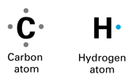
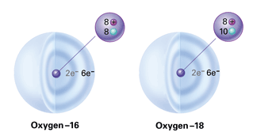
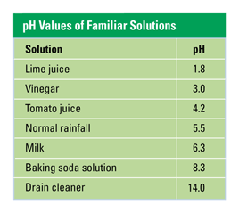

Reviewing Concepts
Multiple Choice
Choose the letter of the best answer.
1. Which of the following is not an element?
a. hydrogen
b. carbon
c. water
d. iron
2. Which of the following particles are found in the nucleus of an atom?
a. electrons and protons
b. electrons and neutrons
c. protons and neutrons
d. only electrons
3. Compared to nitrogen-14, the radioactive isotope nitrogen-16 has
a. two more neutrons.
b. two more protons.
c. a different atomic number.
d. a different electric charge.
4. A covalent bond forms when
a. opposite ions attract.
b. protons are shared between atoms.
c. an electron is transferred from one atom to another.
d. two atoms share a pair of electrons.
5. Substances formed by a chemical reaction are called
a. reactants.
b. products.
c. chemical formulas.
d. chemical equations.
6. Which of the following properties of water is not a result of hydrogen bonding?
a. cohesion
b. ability to dissolve many substances
c. lower density of ice compared to liquid water
d. ratio of hydrogen to oxygen in water molecules
7. A solution with a pH of 9 is
a. acidic.
b. basic.
c. neutral.
d. higher in H+ ions than in OH- ions.
Short Answer
8. What four essential elements make up most of living matter?
9. List three subatomic particles. For each particle, state where it is located in the atom and what electric charge it has (if any).
10. How are the number of electrons in an atom's highest energy level related to the reactivity of that atom?
11. How is a potassium atom (K) different from a potassium ion (K+)?
12. Summarize the information represented in a chemical equation.
13. Explain what makes a water molecule polar.
14. Explain how water can absorb large amounts of thermal energy without having a similarly large increase in temperature.
15. Describe how the properties of water molecules contribute to the upward movement of water through a tall tree.
16. What is an aqueous solution?
17. How does a buffer keep a solution from becoming too acidic?
18. Describe two conditions on Earth that make the planet favorable for life.
Visualizing Concepts
19. The diagrams below represent atoms of carbon and hydrogen. These two elements can combine to form the compound methane, which has a ratio of one carbon atom to four hydrogen atoms in its molecules. Using these diagrams and colored pencils or pens, draw a model of a molecule of methane. Then write the chemical formula for the compound.

Applying Concepts
Analyzing Information
20. Analyzing Diagrams Use the diagrams of atoms below to answer the following questions:
a. What is the relationship between these two atoms of oxygen? Explain.
b. What is the atomic number of oxygen? How do you know?
c. How many covalent bonds can either one of these oxygen atoms form? Explain.

21. Analyzing Data Use the data table below to answer the following questions.
a. Which sample in the table is most acidic?
b. Which sample listed has a pH that is closest to neutral?
c. In equal volumes of normal rainfall and baking soda solution, which sample would have a greater amount of hydrogen ions (H+) present? Explain.

Critical Thinking
22. Relating Cause and Effect Element X has 8 electrons in the highest energy level of its atoms. Is element X likely to be very reactive? Explain.
23. Comparing and Contrasting How is an aqueous solution of table salt different from an aqueous solution of table sugar? Describe how each solution forms.
24. Evaluating Promotional Claims Suppose a cosmetics manufacturer advertises a shampoo as "having a pH as gentle as rainwater." Describe how you might determine whether the promotional claim is valid.
25. Making Generalizations How is energy involved in the chemical reaction that produces water from hydrogen and oxygen?
26. What's Wrong With These Statements?
Briefly explain why each statement is inaccurate or misleading.
a. An ion is electrically neutral.
b. A chemical reaction occurs whenever matter is created.
c. Ice floats because it is lighter than liquid water.
Performance Assessment
Design an Experiment You have learned that attractions between water molecules help move water through a plant. Design an experiment that would demonstrate that the direction of this movement is from the roots to the leaves and not the opposite.